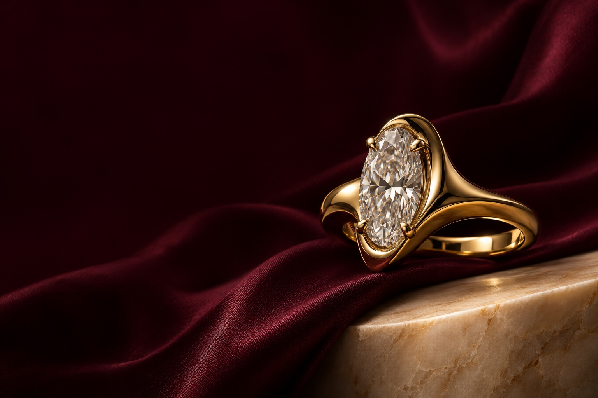
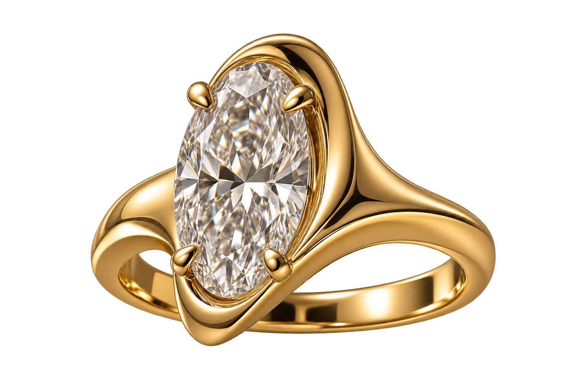

01 / EL ANILLO SOLÈNE
Un instante,
guardado en oro.
Un óvalo de luz. Una línea continua. Una colección ficticia de alta joyería inspirada en la idea de que lo más personal necesita pocas palabras.

02 / HAZLO PERSONAL
Solène.
Una pieza imaginada para una sola persona. Tú.
VISTA DEL GRABADO
Tu historia, en pocas palabras.
SOLO VISTA PREVIA · NO SE ENVÍAN NI GUARDAN DATOS
TU MARCA PODRÍA SENTIRSE ASÍ
Una impresión.
Que permanece.
Crea el tuyo con JEM ↗Un estudio de diseño original de JEM Web Solutions. Marca ficticia, imágenes y especificaciones ilustrativas. Este demo no realiza compras ni reservas.